I am a computer scientist working on Computer Vision and Physical Intelligence. I received my Ph.D. from Temple University, advised by Prof. Haibin Ling. My research spans computer vision, deep learning, autonomous driving and medical image analysis, with publications at CVPR, ICCV, ECCV, AAAI, MICCAI, ICRA, and IROS.
🔭 Current focus: Physical Intelligence in Autonomous Driving & Robotics
Hiring: I am looking for several self-motivated PhD/Master students to join my group in 2026. Visiting students and postdoctoral researchers are also welcome. Feel free to send me an email.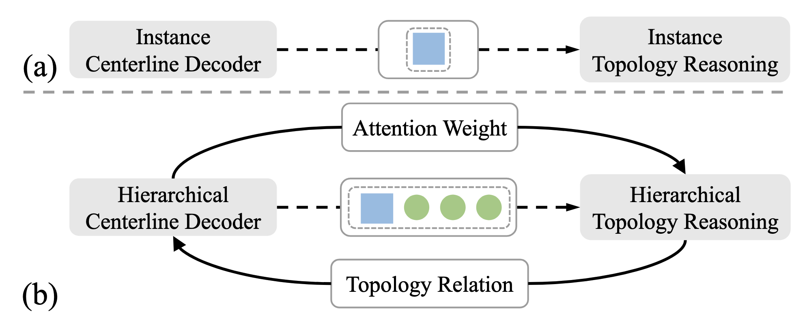
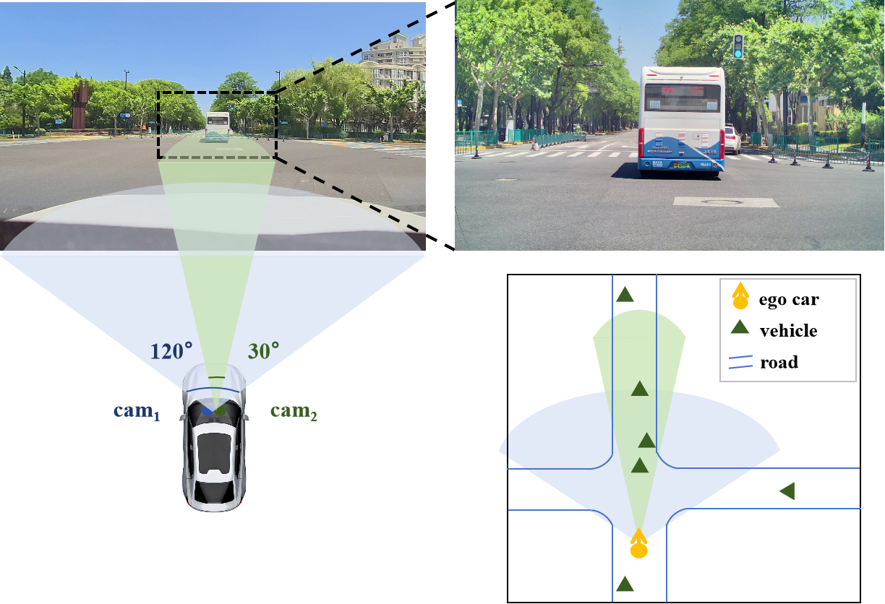
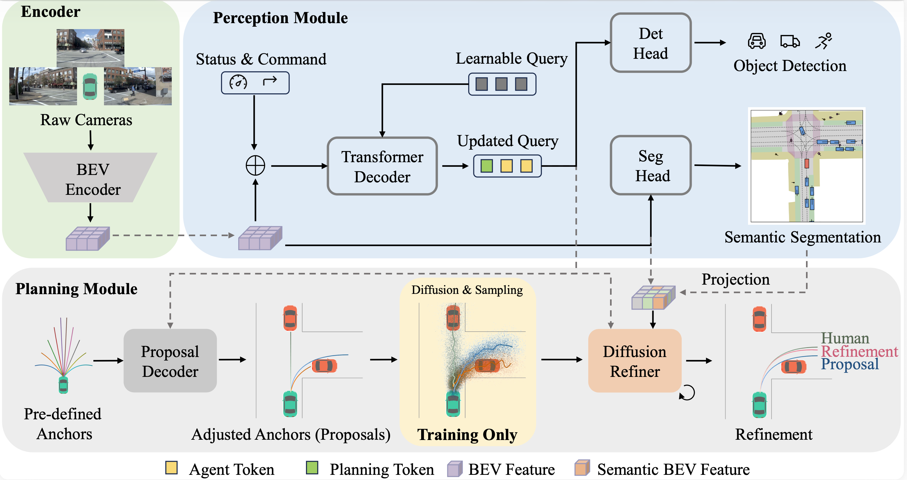
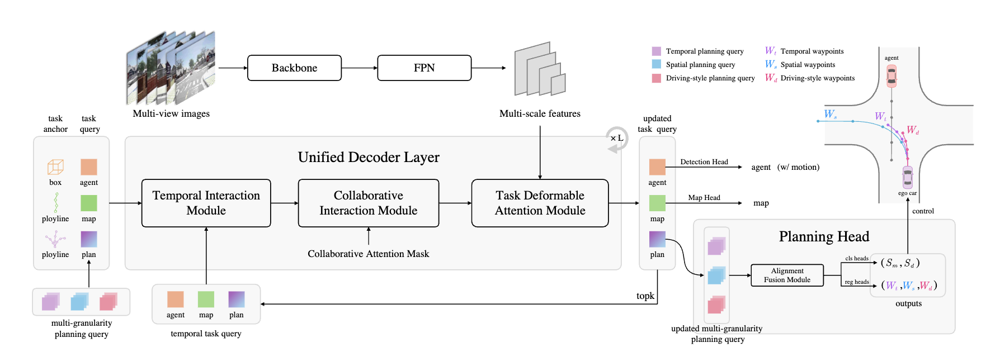
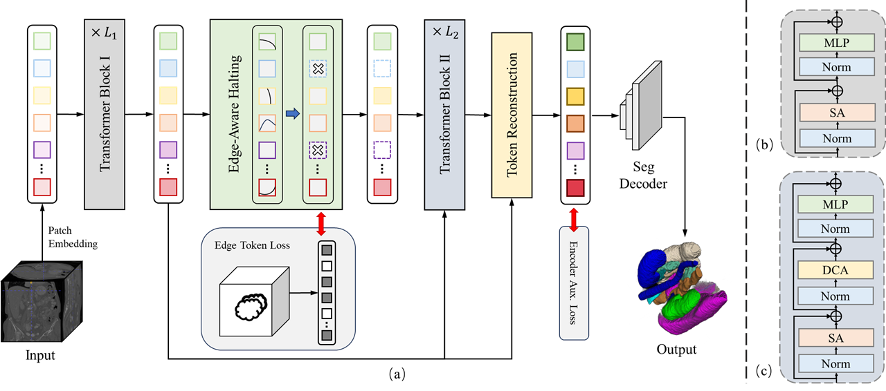
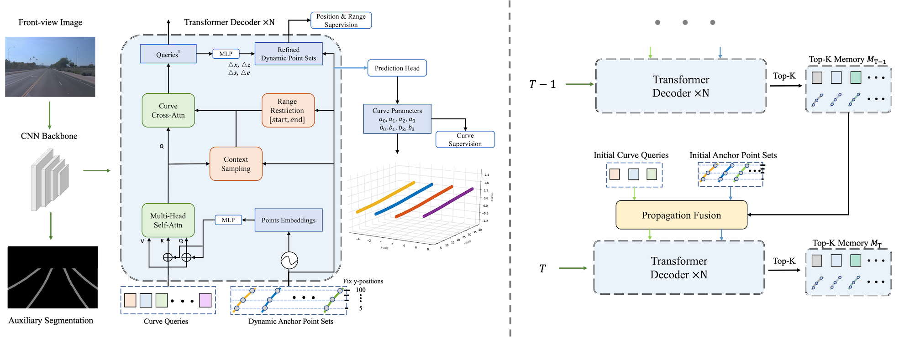
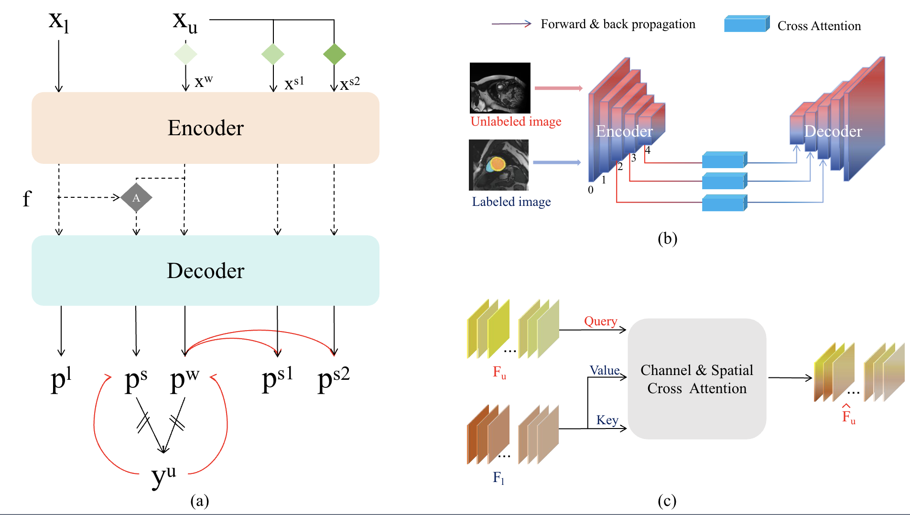
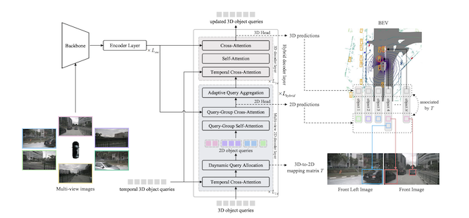
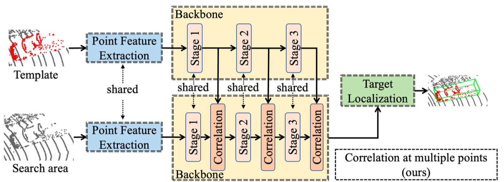
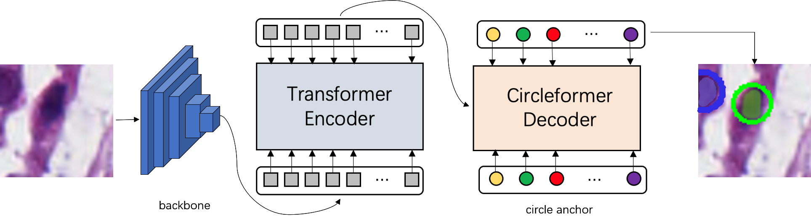
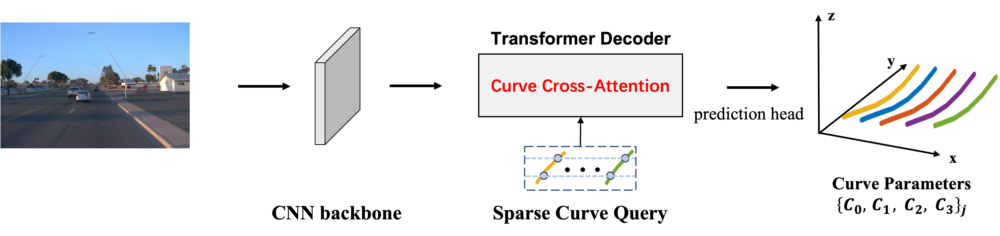